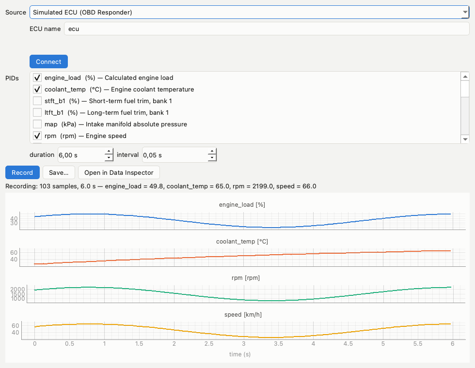
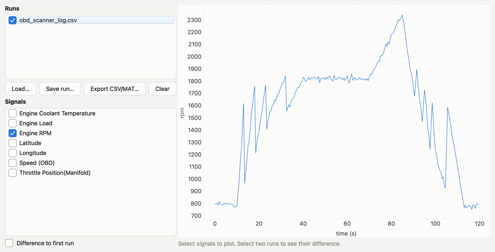
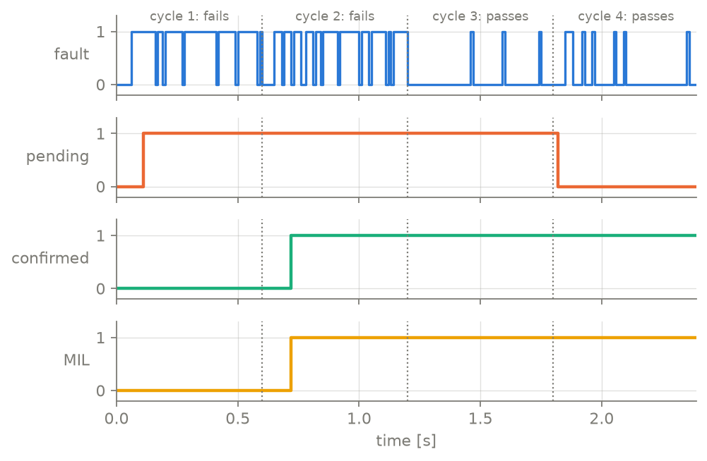

OBD-II: read live data from a car¶
Every petrol car since 2001 (EU) / 1996 (US), and every diesel since 2004, has an OBD-II diagnostic port, usually under the dashboard near the steering column. With an ELM327 adapter (USB or Bluetooth) Nervus can read the standard live values that SAE J1979 defines as mode 01 PIDs: engine speed, vehicle speed, temperatures, air flow, throttle position, fuel trims and more.
Use it to:
- record a real drive and compare it with your model in the Data Inspector, or open a log you made with a scanner app or a CAN logger (below);
- replay the recording as the input of a test case (for example, real rpm and throttle into your idle controller);
- check that your plant model behaves like your car.
Read-only
Nervus only sends standard read requests (modes 01, 02, 03, 07, 09 and 0A). It never clears codes, writes to, or reprograms the car's ECUs.
Setup¶
uv sync --extra obd # installs pyserial
uv run python -m nervus.obd pids # PIDs Nervus can decode
uv run python -m nervus.obd supported --port /dev/tty.usbserial-1110
uv run python -m nervus.obd record --port /dev/tty.usbserial-1110 \
--pids rpm,speed,coolant_temp,throttle --duration 120 --out drive.nervres
On Windows the port is called COM3 or similar; on Linux /dev/ttyUSB0 or /dev/rfcomm0 for Bluetooth.
Turn the ignition on (or start the engine) before connecting.
Open drive.nervres with File → Open Result in the Data Inspector, or save it as CSV with
--out drive.csv.
Recording in the editor¶
Tools → Record from OBD-II… does the same as record with live plots. Choose the source: an ELM327
adapter (its serial port), a CAN interface (python-can: SocketCAN, PEAK, Kvaser, Vector, ...) or a
simulated ECU (a model with an OBD Responder running in Nervus, see below). Press Connect: PIDs that
the car does not report are greyed out. Tick the PIDs, set a duration (or record until Stop) and an
interval, and press Record. Each PID gets its own plot while it records. Afterwards, Save… writes a
.nervres or .csv file and Open in Data Inspector adds the drive as a run, to compare with a simulation.

Logs from scanner apps and CAN loggers¶
Already have a log? Tools → Open Vehicle Log… (or Load… in the Data Inspector) opens it as a run in the Data Inspector, next to your simulations. Nervus reads:
| Log | From | How it looks |
|---|---|---|
| CSV, one column per value | Torque, OBD Fusion, OBDLink, FORScan, ScanMaster, Nervus's own export, most loggers | Device Time,Engine RPM(rpm),Speed (OBD)(km/h) |
| CSV, one row per sample | Car Scanner | "SECONDS";"PID";"VALUE";"UNITS" |
| CAN log with a DBC file | CAN loggers, CANalyzer, PCAN-View, SavvyCAN, candump; trucks (J1939) | .asc, .blf, .trc, .log |
| CAN log without a DBC file | a CAN log of a scan tool talking to the car | the OBD-II answers (0x7E8 to 0x7EF) |
For CSV files, Nervus finds the header (lines above it, such as the vehicle name, are skipped), the separator
(,, ; or tab), a decimal comma, and the unit in the column name (Engine RPM(rpm) or Fuel rate [l/h]
becomes the value Engine RPM in rpm). The time column is the first one called time, seconds,
timestamp and the like, in seconds (milliseconds if its name or unit says ms), or as dates and clock times,
counted from the first line. Empty cells and - (a value that was not read that time) are filled in from the
samples around them; text columns are left out.
For a CAN log, Nervus asks for a DBC file and decodes every signal of every message in it. A truck's J1939 messages are matched by their parameter group, whichever controller sent them, so one J1939 DBC file fits any truck. Cancel the DBC question to decode only the OBD-II answers in the log, with the PIDs Nervus knows.
Every value has its own time stamps (a scanner reads one PID after the other); Nervus puts them on the time stamps of the value with the most samples, linearly interpolated. The units are shown in the plot.

In Python:
from nervus.logs import log_channels, read_log
log_channels("examples/data/obd_scanner_log.csv") # {'Engine RPM': 'rpm', 'Speed (OBD)': 'km/h', ...}
rec = read_log("examples/data/obd_scanner_log.csv", ["Engine RPM"], raster=0.1)
truck = read_log("truck.blf", dbc="j1939.dbc")
FromWorkspace(time=rec.t, data=rec["Engine RPM"]) # drive a model with the recorded engine speed
Trouble codes, freeze frame and VIN¶
uv run python -m nervus.obd dtc --port /dev/tty.usbserial-1110
VIN: WVWZZZ1KZAW000001
stored trouble codes: 2
P0133 O2 sensor slow response (bank 1 sensor 1)
P0300 Random/multiple cylinder misfire detected
pending trouble codes: none
permanent trouble codes: none
freeze frame: rpm=1726, speed=50, coolant_temp=83, engine_load=40.4
| Kind | OBD mode | Meaning |
|---|---|---|
| stored | 03 | Confirmed faults; these switch on the check-engine lamp (MIL) |
| pending | 07 | Seen in the current or last drive cycle, not yet confirmed |
| permanent | 0A | Stay until the ECU itself sees the fault is gone; a tool cannot clear them |
| freeze frame | 02 | Snapshot of live values when the first code was stored |
A code such as P0133 reads as: letter = system (Powertrain, Chassis, Body, network U), first digit 0/2 = generic SAE code (1/3 = manufacturer specific), then the subsystem (1 = air/fuel metering, 3 = ignition/misfire, 4 = emissions, ...) and the fault number. Nervus knows the descriptions of common generic codes; look up others in the SAE J2012 list or your car's service information.
Nervus does not clear trouble codes (mode 04): clearing also resets the readiness monitors that an emissions inspection checks. Use your car's diagnostic tool for that, once the cause is fixed.
In Python: elm.trouble_codes("stored"), elm.freeze_frame(PIDS["rpm"]), elm.vin().
Trouble codes in your own models¶
The Diagnostic Monitor block (Library → Diagnostics) is the ECU side of a trouble code: it turns the raw
result of a monitor (e.g. misfire_rate > limit) into a debounced DTC, the way the diagnostic event manager of
an engine ECU does:
- Debouncing: a counter goes up by fail_step for each failed sample and down by pass_step for each passed one. At +threshold the test has failed, at −threshold it has passed; short glitches do nothing.
- Pending: the first failure makes the code pending immediately.
- Confirmed and MIL: after confirm_cycles operation cycles in a row with a failure (2: OBD's two-trip detection) the code is confirmed and the MIL (check-engine lamp) comes on.
- Healing: after heal_cycles passed cycles in a row the MIL goes off; the code stays stored as confirmed.
- Readiness: the ready output is 1 once the monitor has completed (passed or failed) since the codes were last cleared, which is what an inspection checks; clearing the codes (the optional clear input, like mode 04) sets it back to "not complete".

The optional enable input holds the test while its conditions are not met (e.g. only with a warm engine), and a rising edge on the optional cycle input starts a new operation cycle (key on). The status output is the UDS DTC status byte (ISO 14229), the same bits a scan tool shows. The block generates C code, so the diagnostic logic can run in the ECU code and be tested back to back like the rest of the model.
A simulated car: test diagnostic tools without a vehicle¶
nervus.obd_sim.SimulatedEcu answers OBD requests like a car's engine ECU: live data (mode 01, including
PID 01 with the MIL and the number of codes), stored, pending and permanent codes (03, 07, 0A), clearing
(04) and the VIN (09). It speaks the ELM327 text protocol, so the Nervus client works with it directly:
from nervus.obd import PIDS, Elm327
from nervus.obd_sim import SimulatedEcu
car = SimulatedEcu({"rpm": 2175, "coolant_temp": 88}, {"P0302": 0x8C}, vin="WVWZZZ1KZAW123456")
elm = Elm327(car) # instead of a serial port
elm.initialize()
elm.read(PIDS["rpm"])
elm.trouble_codes()
elm.vin()
In a model, the OBD Responder block (Library → Diagnostics) publishes model signals as PIDs and the status
of Diagnostic Monitors as trouble codes while the simulation runs. When a tool clears the codes, its clear
output resets the monitors in the model. examples/obd_ecu.py is an engine ECU with a misfire monitor
(P0302: pending in the first key cycle, MIL in the second) and a lean monitor. Run it in real time, and
connect any OBD program to the serial port it prints (a pseudo-terminal, on macOS and Linux):
uv run python -m nervus.obd simulate examples/obd_ecu.nervus
# ECU 'ecu': ELM327 on /dev/ttys007
uv run python -m nervus.obd dtc --port /dev/ttys007 # in another terminal
OBD over CAN, without an ELM327¶
Cars since about 2008 use CAN for OBD-II (ISO 15765-4: 11-bit identifiers, 500 kbit/s). A request goes to the
functional address 0x7DF and the engine ECU answers from 0x7E8. Answers longer than 7 bytes (the VIN, many
codes) are split by ISO-TP: a first frame, a flow-control frame from the tool, then consecutive frames.
With a CAN interface supported by python-can (PEAK, Kvaser, Vector, SocketCAN on Linux) Nervus talks to the
car directly:
uv run python -m nervus.obd dtc --can-interface socketcan --can-channel can0
uv run python -m nervus.obd record --can-interface pcan --can-channel PCAN_USBBUS1 --pids rpm,speed
from nervus.obd_can import CanObd
obd = CanObd(interface="socketcan", channel="can0")
obd.initialize()
obd.read(PIDS["rpm"])
obd.vin()
The simulated ECU answers on CAN too (--can-interface virtual --can-channel test with simulate, or
nervus.obd_can.serve_can), which is how the CAN client is tested without hardware.
How a PID is decoded¶
The adapter sends a request such as 010C (mode 01, PID 0x0C = engine speed). The car answers with
41 0C A B, where A and B are data bytes. Each PID has a formula, for example:
| Name | PID | Unit | Formula |
|---|---|---|---|
engine_load |
04 | % | A·100/255 |
coolant_temp |
05 | °C | A − 40 |
stft_b1, ltft_b1 |
06, 07 | % | (A − 128)·100/128 |
map |
0B | kPa | A |
rpm |
0C | rpm | (256A + B)/4 |
speed |
0D | km/h | A |
timing_advance |
0E | ° | A/2 − 64 |
intake_temp |
0F | °C | A − 40 |
maf |
10 | g/s | (256A + B)/100 |
throttle |
11 | % | A·100/255 |
o2_b1s1 |
14 | V | A/200 |
run_time |
1F | s | 256A + B |
fuel_level |
2F | % | A·100/255 |
baro |
33 | kPa | A |
module_voltage |
42 | V | (256A + B)/1000 |
lambda_cmd |
44 | – | 2(256A + B)/65536 |
ambient_temp |
46 | °C | A − 40 |
pedal_d |
49 | % | A·100/255 |
oil_temp |
5C | °C | A − 40 |
fuel_rate |
5E | L/h | (256A + B)/20 |
Not every car reports every PID; supported asks the car which ones it has.
In Python¶
from nervus.core import Signal
from nervus.obd import Elm327, SerialTransport, record
elm = Elm327(SerialTransport("/dev/tty.usbserial-1110"))
elm.initialize()
drive = record(elm, ["rpm", "throttle"], duration=60)
drive.save("drive.nervres")
rpm_input = Signal(drive.t, drive["rpm"], "linear") # use as a test-case input
Over an ELM327 each PID takes roughly 30–100 ms, so polling 4 PIDs gives a few samples per second. Planned next (see the plan, Phase 22): OBD directly over a CAN interface, and a live recording window in the editor.